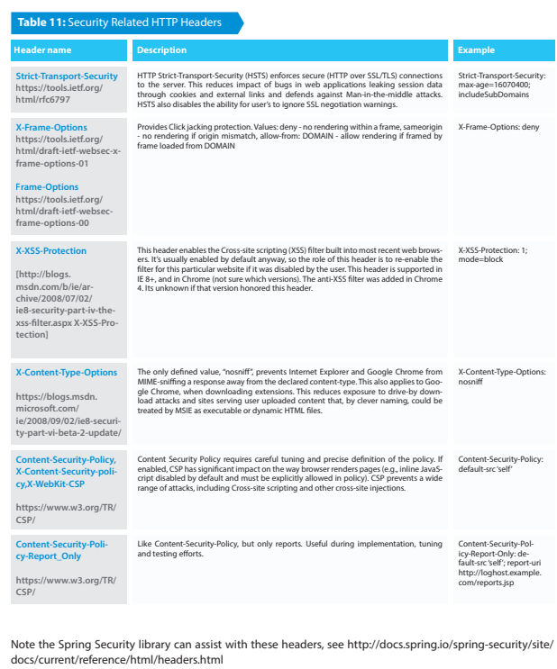

Mitigation
- Directives can be specifed using HTTP response header (a server may send more than one CSP HTTP header feld with a given resource representation and a server may send diferent CSP header feld values with different representations of the same resource or with diferent resources) or HTML Meta tag, the HTTP headers below are defned by the specs:
- Content-Security-Policy : Defned by W3C Specs as standard header, used by Chrome version 25 and later, Firefox version 23 and later, Opera version 19 and later.
- X-Content-Security-Policy : Used by Firefox until version 23, and Internet Explorer version 10 (which partially implements Content Security Policy).
- X-WebKit-CSP : Used by Chrome until version 25
- Useful security-related HTTP headers
- In most architectures these headers can be set in web servers configuration without changing actual application’s code. This offers significantly faster and cheaper method for at least partial mitigation of existing issues,and an additional layer of defense for new applications:
